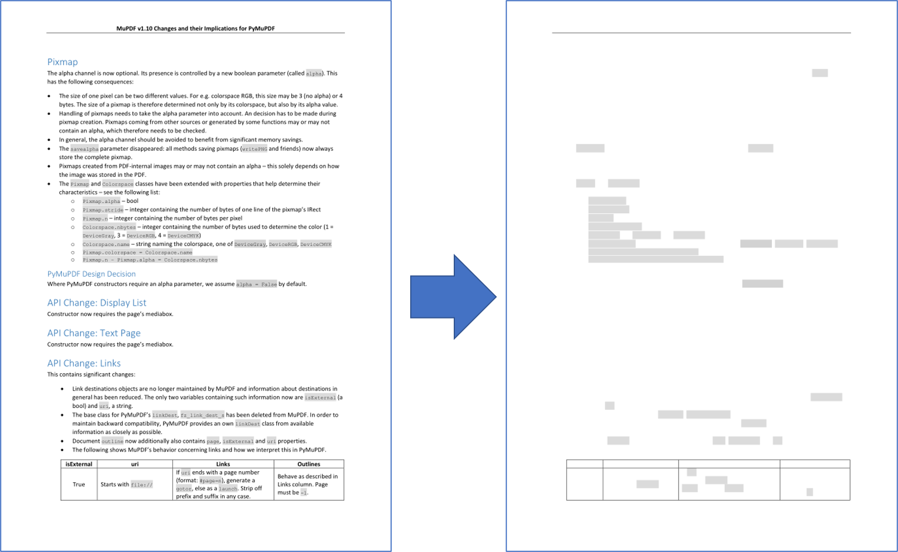

绘图和图形#
Drawing and Graphics
备注
当本文提及 “Drawings” 或 “Graphics” 时，我们指的是 “Vector Graphics” 或 “Line Art”。
因此，请将这些术语视为同义词！
PDF 文件在其语法中支持基本的绘图操作。这些是 矢量图形，包括线条、曲线、圆形、矩形等基本几何对象，并允许指定颜色。
这些操作的语法在 Adobe PDF 参考 第 643 页的 “A Operator Summary” 章节中定义。在 PDF 页面上指定这些操作时，它们位于 contents 对象中。
PyMuPDF 通过其 Shape 类实现了大部分可用的绘图功能，该类类似于其他软件包中的 “canvas”（例如 reportlab）。
形状（Shape）始终作为 页面的子对象 创建，通常使用 shape = page.new_shape() 进行初始化。该类定义了多个方法，可在页面区域上执行绘图操作。例如，last_point = shape.draw_rect(rect) 可沿 rect = pymupdf.Rect(...) 定义的边界绘制一个矩形。
返回的 last_point 始终 是绘图操作结束时的 Point （即 “最后一个点”）。每个基本绘图操作都需要后续调用 Shape.finish() 以 “结束” 该操作，但多个绘图可以共享一个 finish() 方法。
实际上，Shape.finish() 定义 了一组先前的绘图操作，使其形成一个（可能相当复杂的）图形对象。PyMuPDF 提供了多个预定义图形，存放于 shapes_and_symbols.py 文件中，该文件展示了这些功能的使用方式。
如果导入此脚本，还可以直接使用其中的图形，如下所示:
# -*- coding: utf-8 -*-
"""
Created on Sun Dec 9 08:34:06 2018
@author: Jorj
@license: GNU AFFERO GPL V3
创建一个包含 shapes_and_symbols.py 中定义的可用符号的列表。
此外，该示例还演示了这些符号的使用方式，例如将它们用作文本中的项目符号。
"""
import pymupdf
import shapes_and_symbols as sas
# 可用符号函数及其描述列表
tlist = [
(sas.arrow, "箭头 (简单)"),
(sas.caro, "菱形 (简单)"),
(sas.clover, "三叶草 (简单)"),
(sas.diamond, "钻石 (简单)"),
(sas.dontenter, "禁止通行 (中等)"),
(sas.frowney, "皱眉脸 (中等)"),
(sas.hand, "手形 (复杂)"),
(sas.heart, "爱心 (简单)"),
(sas.pencil, "铅笔 (非常复杂)"),
(sas.smiley, "笑脸 (简单)"),
]
r = pymupdf.Rect(50, 50, 100, 100) # 符号所在的第一个矩形区域
d = pymupdf.Rect(0, r.height + 10, 0, r.height + 10) # 下一个矩形的偏移量
p = (15, -r.height * 0.2) # 说明文本的起始位置
rlist = [r] # 矩形区域列表
for i in range(1, len(tlist)): # 生成所有矩形区域
rlist.append(rlist[i-1] + d)
doc = pymupdf.open() # 创建空白 PDF
page = doc.new_page() # 创建空白页面
shape = page.new_shape() # 创建 Shape（画布）
for i, r in enumerate(rlist):
tlist[i][0](shape, rlist[i]) # 执行符号绘制
shape.insert_text(rlist[i].br + p, # 插入描述文本
tlist[i][1], fontsize=r.height/1.2)
# 将所有内容提交到页面的 /Contents 对象
shape.commit()
import os
scriptdir = os.path.dirname(__file__)
doc.save(os.path.join(scriptdir, "symbol-list.pdf")) # 保存 PDF 文件
该脚本的运行结果如下所示：

备注
When the terms “Drawings” or “Graphics” are mentioned here we are referring to “Vector Graphics” or “Line Art”.
Therefore please consider these terms as being synonymous!
PDF files support elementary drawing operations as part of their syntax. These are vector graphics and include basic geometrical objects like lines, curves, circles, rectangles including specifying colors.
The syntax for such operations is defined in “A Operator Summary” on page 643 of the Adobe PDF 参考. Specifying these operators for a PDF page happens in its contents objects.
PyMuPDF implements a large part of the available features via its Shape class, which is comparable to notions like “canvas” in other packages (e.g. reportlab).
A shape is always created as a child of a page, usually with an instruction like shape = page.new_shape(). The class defines numerous methods that perform drawing operations on the page’s area. For example, last_point = shape.draw_rect(rect) draws a rectangle along the borders of a suitably defined rect = pymupdf.Rect(...).
The returned last_point always is the Point where drawing operation ended (“last point”). Every such elementary drawing requires a subsequent Shape.finish() to “close” it, but there may be multiple drawings which have one common finish() method.
In fact, Shape.finish() defines a group of preceding draw operations to form one – potentially rather complex – graphics object. PyMuPDF provides several predefined graphics in shapes_and_symbols.py which demonstrate how this works.
If you import this script, you can also directly use its graphics as in the following example:
# -*- coding: utf-8 -*-
"""
Created on Sun Dec 9 08:34:06 2018
@author: Jorj
@license: GNU AFFERO GPL V3
Create a list of available symbols defined in shapes_and_symbols.py
This also demonstrates an example usage: how these symbols could be used
as bullet-point symbols in some text.
"""
import pymupdf
import shapes_and_symbols as sas
# list of available symbol functions and their descriptions
tlist = [
(sas.arrow, "arrow (easy)"),
(sas.caro, "caro (easy)"),
(sas.clover, "clover (easy)"),
(sas.diamond, "diamond (easy)"),
(sas.dontenter, "do not enter (medium)"),
(sas.frowney, "frowney (medium)"),
(sas.hand, "hand (complex)"),
(sas.heart, "heart (easy)"),
(sas.pencil, "pencil (very complex)"),
(sas.smiley, "smiley (easy)"),
]
r = pymupdf.Rect(50, 50, 100, 100) # first rect to contain a symbol
d = pymupdf.Rect(0, r.height + 10, 0, r.height + 10) # displacement to next rect
p = (15, -r.height * 0.2) # starting point of explanation text
rlist = [r] # rectangle list
for i in range(1, len(tlist)): # fill in all the rectangles
rlist.append(rlist[i-1] + d)
doc = pymupdf.open() # create empty PDF
page = doc.new_page() # create an empty page
shape = page.new_shape() # start a Shape (canvas)
for i, r in enumerate(rlist):
tlist[i][0](shape, rlist[i]) # execute symbol creation
shape.insert_text(rlist[i].br + p, # insert description text
tlist[i][1], fontsize=r.height/1.2)
# store everything to the page's /Contents object
shape.commit()
import os
scriptdir = os.path.dirname(__file__)
doc.save(os.path.join(scriptdir, "symbol-list.pdf")) # save the PDF
This is the script’s outcome:
- scale:
50
如何提取绘图#
How to Extract Drawings
新增于 v1.18.0
页面发出的绘图命令（矢量图形）可以被提取为字典列表。有趣的是，这不仅适用于 PDF，而是 所有支持的文档类型，包括 XPS、EPUB 等。
Page.get_drawings() 方法可以访问绘图命令，并将其转换为 Python 字典列表。每个字典（称为 “path”）表示一个独立的绘图对象，可以是简单的一条线，也可以是前一节介绍的复杂图形（由线条和曲线组合而成）。
path 字典的设计便于与 Shape 类及其方法结合使用。例如，以下示例展示了如何在 Rect(100, 100, 200, 200) 矩形区域内绘制一个红色边框、黄色填充的圆:
>>> pprint(page.get_drawings())
[{'closePath': True,
'color': [1.0, 0.0, 0.0],
'dashes': '[] 0',
'even_odd': False,
'fill': [1.0, 1.0, 0.0],
'items': [('c',
Point(100.0, 150.0),
Point(100.0, 177.614013671875),
Point(122.38600158691406, 200.0),
Point(150.0, 200.0)),
('c',
Point(150.0, 200.0),
Point(177.61399841308594, 200.0),
Point(200.0, 177.614013671875),
Point(200.0, 150.0)),
('c',
Point(200.0, 150.0),
Point(200.0, 122.385986328125),
Point(177.61399841308594, 100.0),
Point(150.0, 100.0)),
('c',
Point(150.0, 100.0),
Point(122.38600158691406, 100.0),
Point(100.0, 122.385986328125),
Point(100.0, 150.0))],
'lineCap': (0, 0, 0),
'lineJoin': 0,
'opacity': 1.0,
'rect': Rect(100.0, 100.0, 200.0, 200.0),
'width': 1.0}]
>>>
备注
绘制一个精确的圆至少需要 4 条三阶 Bézier 曲线。更多背景信息请参考 维基百科。
以下代码片段提取页面的绘图数据，并在新页面上重新绘制:
import pymupdf
doc = pymupdf.open("some.file")
page = doc[0]
paths = page.get_drawings() # 提取绘图数据
# paths 是一个 "path" 列表，可直接使用 Shape 重新绘制
# -------------------------------------------------------------------------
# 创建与原页面尺寸相同的新页面
outpdf = pymupdf.open()
outpage = outpdf.new_page(width=page.rect.width, height=page.rect.height)
shape = outpage.new_shape() # 创建绘图画布
# --------------------------------------
# 遍历 paths 并绘制它们
# --------------------------------------
for path in paths:
# ------------------------------------
# 遍历 'items' 列表的每个元素
# ------------------------------------
for item in path["items"]: # 这些是绘图命令
if item[0] == "l": # 线条
shape.draw_line(item[1], item[2])
elif item[0] == "re": # 矩形
shape.draw_rect(item[1])
elif item[0] == "qu": # 四边形
shape.draw_quad(item[1])
elif item[0] == "c": # Bézier 曲线
shape.draw_bezier(item[1], item[2], item[3], item[4])
else:
raise ValueError("未处理的绘图命令", item)
# ------------------------------------------------------
# 所有项已绘制，应用 path 的通用属性
# ------------------------------------------------------
shape.finish(
fill=path["fill"], # 填充颜色
color=path["color"], # 线条颜色
dashes=path["dashes"], # 线条虚线模式
even_odd=path.get("even_odd", True), # 处理重叠部分的颜色控制
closePath=path["closePath"], # 是否连接首尾点
lineJoin=path["lineJoin"], # 线条连接方式
lineCap=max(path["lineCap"]), # 线条端点样式
width=path["width"], # 线宽
stroke_opacity=path.get("stroke_opacity", 1), # 线条透明度
fill_opacity=path.get("fill_opacity", 1), # 填充透明度
)
# 所有 paths 处理完成，提交形状至页面
shape.commit()
outpdf.save("drawings-page-0.pdf")
可以看出，该方法与 Shape 类的兼容性极高。唯一的例外是：由于技术原因，lineCap 在 path 字典中是一个包含 3 个数值的元组，而在 Shape 类（以及 PDF 规范）中，它是一个整数。因此，我们在此取该元组的最大值。
以下是上述脚本处理的示例页面的输入和输出对比：
{kind=link}
备注
目前的绘图重构方式并不完美，以下情况不会被正确还原：
页面定义可能较为复杂，其中可能包含隐藏某些区域的指令，使其不可见。而
Page.get_drawings()不考虑这些指令，它始终返回所有路径。
备注
你可以使用 path 列表来创建自己的对象筛选，例如提取页面上的所有线条或矩形，并根据颜色、位置等标准进行筛选。
New in v1.18.0
Drawing commands (vector graphics) issued by a page can be extracted as a list of dictionaries. Interestingly, this is possible for all supported document types – not just PDF: so you can use it for XPS, EPUB and others as well.
Page method, Page.get_drawings() accesses draw commands and converts them into a list of Python dictionaries. Each dictionary – called a “path” – represents a separate drawing – it may be simple like a single line, or a complex combination of lines and curves representing one of the shapes of the previous section.
The path dictionary has been designed such that it can easily be used by the Shape class and its methods. Here is an example for a page with one path, that draws a red-bordered yellow circle inside rectangle Rect(100, 100, 200, 200):
>>> pprint(page.get_drawings())
[{'closePath': True,
'color': [1.0, 0.0, 0.0],
'dashes': '[] 0',
'even_odd': False,
'fill': [1.0, 1.0, 0.0],
'items': [('c',
Point(100.0, 150.0),
Point(100.0, 177.614013671875),
Point(122.38600158691406, 200.0),
Point(150.0, 200.0)),
('c',
Point(150.0, 200.0),
Point(177.61399841308594, 200.0),
Point(200.0, 177.614013671875),
Point(200.0, 150.0)),
('c',
Point(200.0, 150.0),
Point(200.0, 122.385986328125),
Point(177.61399841308594, 100.0),
Point(150.0, 100.0)),
('c',
Point(150.0, 100.0),
Point(122.38600158691406, 100.0),
Point(100.0, 122.385986328125),
Point(100.0, 150.0))],
'lineCap': (0, 0, 0),
'lineJoin': 0,
'opacity': 1.0,
'rect': Rect(100.0, 100.0, 200.0, 200.0),
'width': 1.0}]
>>>
备注
You need (at least) 4 Bézier curves (of 3rd order) to draw a circle with acceptable precision. See this Wikipedia article for some background.
The following is a code snippet which extracts the drawings of a page and re-draws them on a new page:
import pymupdf
doc = pymupdf.open("some.file")
page = doc[0]
paths = page.get_drawings() # extract existing drawings
# this is a list of "paths", which can directly be drawn again using Shape
# -------------------------------------------------------------------------
#
# define some output page with the same dimensions
outpdf = pymupdf.open()
outpage = outpdf.new_page(width=page.rect.width, height=page.rect.height)
shape = outpage.new_shape() # make a drawing canvas for the output page
# --------------------------------------
# loop through the paths and draw them
# --------------------------------------
for path in paths:
# ------------------------------------
# draw each entry of the 'items' list
# ------------------------------------
for item in path["items"]: # these are the draw commands
if item[0] == "l": # line
shape.draw_line(item[1], item[2])
elif item[0] == "re": # rectangle
shape.draw_rect(item[1])
elif item[0] == "qu": # quad
shape.draw_quad(item[1])
elif item[0] == "c": # curve
shape.draw_bezier(item[1], item[2], item[3], item[4])
else:
raise ValueError("unhandled drawing", item)
# ------------------------------------------------------
# all items are drawn, now apply the common properties
# to finish the path
# ------------------------------------------------------
shape.finish(
fill=path["fill"], # fill color
color=path["color"], # line color
dashes=path["dashes"], # line dashing
even_odd=path.get("even_odd", True), # control color of overlaps
closePath=path["closePath"], # whether to connect last and first point
lineJoin=path["lineJoin"], # how line joins should look like
lineCap=max(path["lineCap"]), # how line ends should look like
width=path["width"], # line width
stroke_opacity=path.get("stroke_opacity", 1), # same value for both
fill_opacity=path.get("fill_opacity", 1), # opacity parameters
)
# all paths processed - commit the shape to its page
shape.commit()
outpdf.save("drawings-page-0.pdf")
As can be seen, there is a high congruence level with the Shape class. With one exception: For technical reasons lineCap is a tuple of 3 numbers here, whereas it is an integer in Shape (and in PDF). So we simply take the maximum value of that tuple.
Here is a comparison between input and output of an example page, created by the previous script:
- scale:
50
备注
The reconstruction of graphics, like shown here, is not perfect. The following aspects will not be reproduced as of this version:
Page definitions can be complex and include instructions for not showing / hiding certain areas to keep them invisible. Things like this are ignored by
Page.get_drawings()- it will always return all paths.
备注
You can use the path list to make your own lists of e.g. all lines or all rectangles on the page and subselect them by criteria, like color or position on the page etc.
如何删除绘图#
How to Delete Drawings
要删除绘图/矢量图形，需要使用 遮盖注释（Redaction Annotation），并将其边界框设为绘图的区域。然后，添加并应用 遮盖注释以删除该绘图。
以下代码示例展示了如何删除页面上的第一个绘图对象:
paths = page.get_drawings()
rect = paths[0]["rect"] # 获取第一个绘图对象的边界矩形
page.add_redact_annot(rect)
page.apply_redactions(0,2,1) # 可设置选项，控制对图像、绘图和文本的删除方式
备注
参见 Page.apply_redactions() 以了解可用参数选项。您可以针对绑定在注释区域内的图像、绘图和文本对象分别应用删除选项。
To delete drawings/vector graphics we must use a Redaction Annotation with the bounding box of the drawing and then add and apply a redaction to it to delete it.
The following code shows an example of deleting the first drawing found on the page:
paths = page.get_drawings()
rect = paths[0]["rect"] # rectangle of the 1st drawing
page.add_redact_annot(rect)
page.apply_redactions(0,2,1) # potentially set options for any of images, drawings, text
备注
See Page.apply_redactions() for the parameter options which can be sent - you are able to apply deletion options to image, drawing and text objects which are bound by the annotation area.
如何绘制图形#
How to Draw Graphics
绘制图形的操作非常简单，只需调用相应的 绘图方法 即可。您可以直接在页面上绘制图形，也可以在形状（Shape）对象内绘制。
例如，绘制一个圆:
# 使用 Page 方法在页面上绘制一个圆
page.draw_circle((center_x, center_y), radius, color=(1, 0, 0), width=2)
# 使用 Shape 对象在页面上绘制一个圆
shape = page.new_shape()
shape.draw_circle((center_x, center_y), radius)
shape.finish(color=(1, 0, 0), width=2)
shape.commit(overlay=True)
Shape 对象可用于组合多个绘图操作，并通过 Shape.finish() 方法为它们指定统一的属性。
Drawing graphics is as simple as calling the type of Drawing Method you may want. You can draw graphics directly on pages or within shape objects.
For example, to draw a circle:
# Draw a circle on the page using the Page method
page.draw_circle((center_x, center_y), radius, color=(1, 0, 0), width=2)
# Draw a circle on the page using a Shape object
shape = page.new_shape()
shape.draw_circle((center_x, center_y), radius)
shape.finish(color=(1, 0, 0), width=2)
shape.commit(overlay=True)
The Shape object can be used to combine multiple drawings that should receive common properties as specified by Shape.finish().